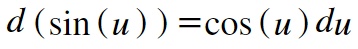

Back to Home
Keaton Hawkins AP Calculus AB Final
So far, we've seen how to calculate the derivative for compound functions that combine other functions using addition, subtraction, and multiplication. After this chain rule explanation, we'll discuss how it works for division. That covers the four operations. But there is another way in which functions can be combined to create new ones: composition. That is, one function can be put inside another in order to create a new function. Consider the functions f and g. Let's say f(x)=3x4 and g(x)=ex. We can put either function inside of the other, creating a composition of functions. For example, f(g(x)) = 3(ex)4. Then, g(f(x)) = e3x4. How do we handle differentiating situations like this? We use the chain rule, which tells us how to differentiate a composition of functions:
The chain rule is fantastic because it arises so fluidly from compositions of functions that once you see the explanation for it, it seems ridiculous that you hadn't come up with it before. Unfortunately, I don't know of any graphical or geometric interpretations for it, so we'll have to rely on some plain old algebra, along with critical thinking about how changing the input to the function by a slight nudge, dx, changes the output. Let's start with an example, then generalize. Consider the function f(x) = sin(x2). We haven't gone over explanations for the derivatives of trig functions yet, so for now, I'll just say that the derivative of sin(x) is simply cos(x). f(x) as I have just defined it is a composition of functions because it composes the function x2 into the function sin(x). Let's consider what happens to the value of f(x) when we nudge the input by a tiny amount, dx.
This change in x first results in a change in the value of the inner function, x2. We can represent this change as d(x2). Because x2 then becomes the input for sin(x), this d(x2) creates a consequent change in the value of sin(x2). We'll call it d(sin(x2)).
For simplicity's sake, let's assign a new variable in place of x2. The letter u will do. So, our change in x, dx, creates a change in the value of x2, now called u. This change is represented by du. Because u then becomes an input for sin(x), this change in the value of u by du creates a change in the value of sin(x2), now sin(u). This change is called d(sin(u)).
Remember during our product rule explanation when we said that for any function, f, df = f'(x)dx? We can use that same logic here, except our variable is u. d(sin(u)) will equal the derivative of sin(u) times du:

Now all that's left is for us to replace all instances of u with x2, and then follow our usual procedure to obtain the value dy/dx:
Remember, f(x) = sin(x2), so we can replace sin(x2) with f. Also, using our df = f'(x)dx logic, d(x2) = 2xdx. Let's substitute those values in and divide both sides by dx:
So, we've shown that the derivative of sin(x2) is equal to the derivative of sin(x), which is cos(x), evaluated on x2, time the derivative of x2, which is 2x. This follows the chain rule formula shown at the top of this page. Now, let's take a moment to use the same process we just used, but with generic functions in order to derive the true chain rule.
Consider the following function: h(x) = f(g(x)). To find its derivative, let's analyze what happens when you nudge the input by an infinitesimally small value, dx. This change in x first creates a difference in the value of the inner function, g(x). We'll call this differnece d(g(x)). Because g(x) then becomes an input for the function f(x), this change by d(g(x)) creates a change in the value of f(g(x)). We'll call this change d(f(g(x))). Again, for simplicity's sake, let's replace our function g(x) with the variable u.
So our minute change in x, dx, creates a change in g(x), now called u. This change is du. Because u is composed into f(x), this du creates a change in the value of f(g(x)), now f(u). We'll call this change d(f(u)). So, our overall resultant change in the value of the function, caused by our infinitesimal change in the value of the input, is d(f(u)). For any function f(x), df = f'(x)dx. We explained why this is the case on our power rule page. Thus, our resultant change in the value of the function h is d(f(u)) = f'(u)du. We can then replace u with g(x) again:
Because h(x) = f(g(x)), we can replace f(g(x)) with h. Also, using our "df = f'(x)dx" logic, d(g(x)) = g'(x)dx:
And there we have it! Thar she blows, our magnificent chain rule. All hail David Coleman!